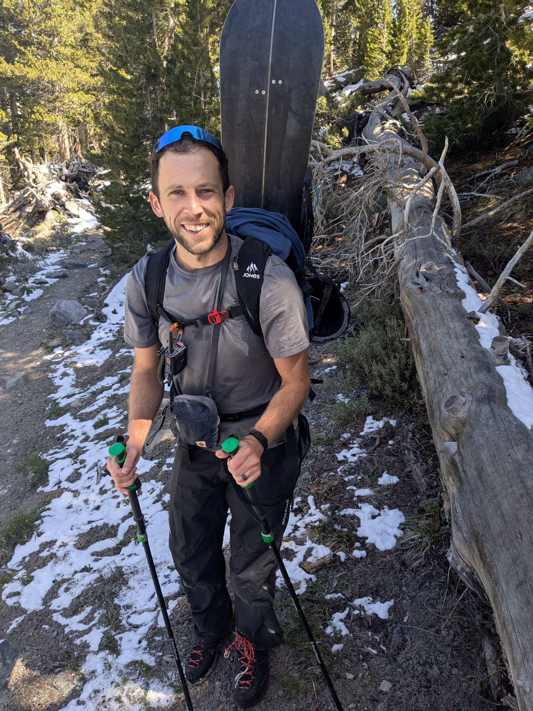
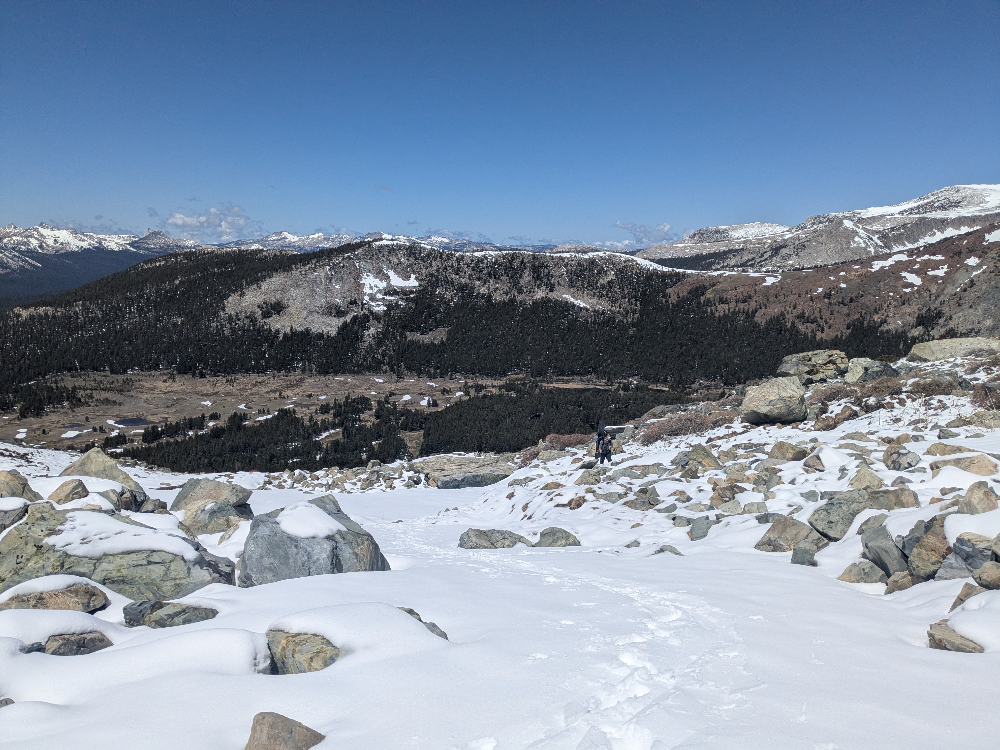
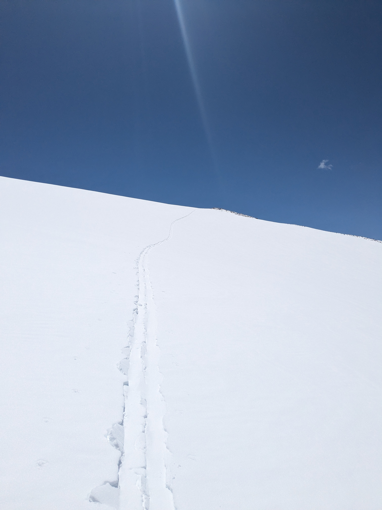
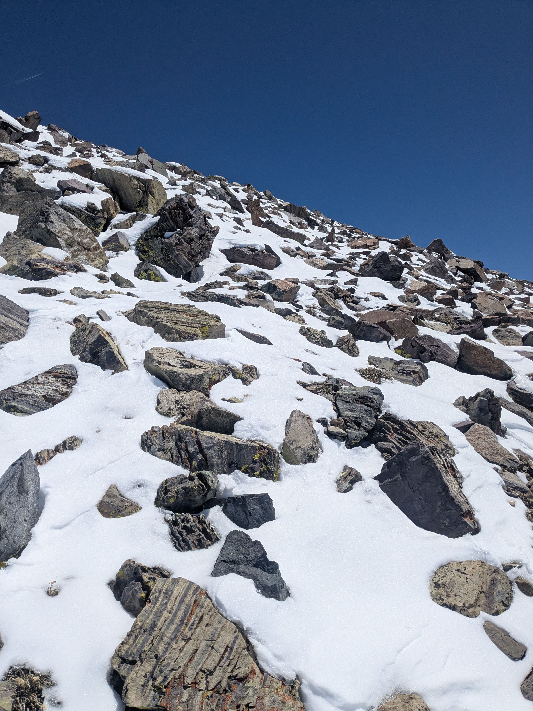
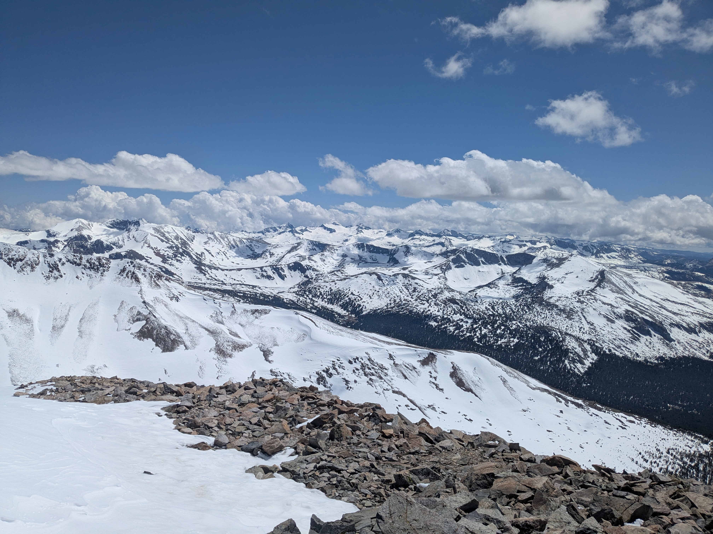
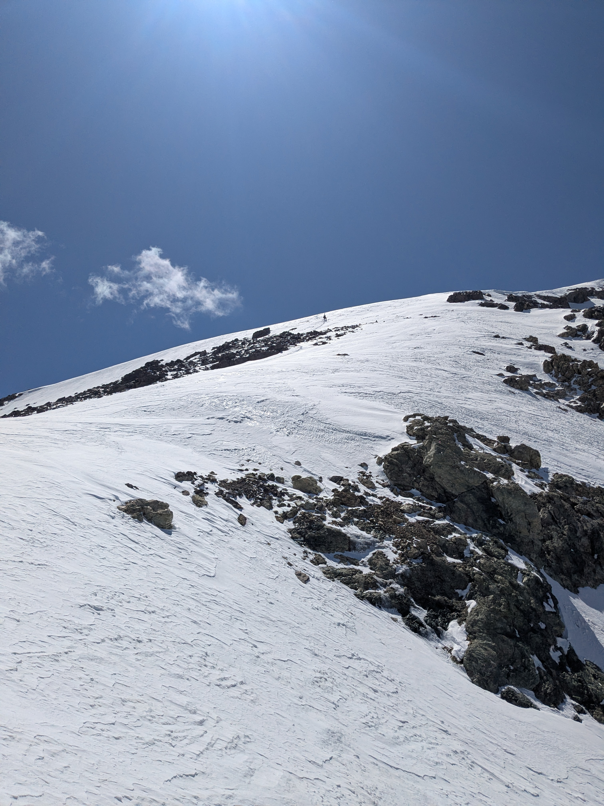

This ended up being my last ski of the season, and it was a little disappointing. One of my goals for the season was to ski couloirs, and Dana couloir would definitely check that list. Jacob and I had been debating doing Shasta, but it had recently dumped some snow after a warm period and we were worried about what the upper mountain would look like. A shorter trip to Yosemite and a juicy couloir seemed more appealing.
We left from the Bay Area early in the morning and made it to the trailhead by xx. The trail went easy and we transitioned at xx ft. The skinning was good until the last 500 feet before the summit, where the snow became too icy without ski crampons. We came across another party who seemed to be moving very slowly where the route steepened. They were discussing attempting the harder XX Couloir; we opted to proceed on boots and to tag the summit.




The going was tricky—several inches of fresh snow on top of talus. I topped out and laid down for a power nap while waiting for Jacob. We descended down the far side, eventually reaching snow. The snow conditions were ugly. Some rapidly softening recent snowfall on top of a breakable crust. I didn’t even bother to ski it, instead plunge stepping my way to the couloir entrance. I was really banking on the couloir holding some nice powder still. Rather, I cautiously moved a few steps down the couloir and found it to be utterly wind scoured ice.


The steepness, the terrain consequence, and the fact that I had not done as much hard skiing as I wanted to this year convinced me that I wasn’t skiing that. Blowing one edge would put me in an uncontrollable slide. It was one of those 10/90 things; 10 Rather, I opted to downclimb the couloir with crampons and ice axe. I actually really enjoyed this downclimb; I haven’t gotten a chance to do much in the way of steep snow lately; it’s good to get that “oh shit, this is STEEP” response while also feeling comfortable with your tools. Poor Jacob, who is already not a fan of steep snow, had only used crampons a handful of times, and he was not enjoying the descent. In hindsight, he wished he had boarded down.
A party behind us did manage to ski down, but the top looked REALLY hard; they were much better skiers than me. The bottom of the couloir was less steep and the snow was better, but it was still steep and firm enough that there was essentially no chance to get my skis on, so I had to keep pressing on. At one point my crampon broke, and so I finished the hard part of the descent with one crampon. Finally, an opportunity to get skis on presented itself, and I got to ski the last hundred feet or snow on heavy, chunky show.
The rest of the way back to the car actually had some fun moments of skiing, interspersed with annoying booting. It was an exercise in chaining together as much snow as possible, and we made it shockingly far. There were some frustrating falls and bushwhack-y moments, and we were both pretty tired from spending a long time on the couloir descent.